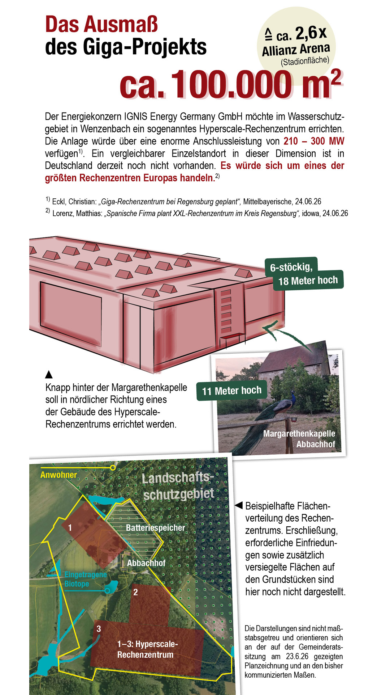

Wenzenbach
Abbachhof
Abbachhof
Bürgerinitiative für Naturerhalt
Kein Giga-
Rechenzentrum
im Wasserschutzgebiet
Der Abbachhof ist ein wertvoller Natur- und Kulturraum. Wir informieren über das geplante Hyperscale-Rechenzentrum und setzen uns für einen verantwortungsvollen Standort ein.
Unsere Position
Fortschritt, ja.
Nicht um jeden Preis.
Die Ansiedlung eines Rechenzentrums in unmittelbarer Nähe zu Menschen, Trinkwasser und sensiblen Naturräumen ist nicht nur eine technische, sondern auch eine gesellschaftliche und ökologische Frage.
01 / Das Vorhaben
Was ist geplant?
Die vorliegenden Angaben zeichnen das Bild eines Großprojekts mit einer Fläche von mehr als zehn Hektar und einer enormen Anschlussleistung.
Planung im Kontext
Erst die Fläche.
Dann die Schutzräume.
Tippe dich durch die zwei Ebenen der Darstellung. Die Zeichnung ist beispielhaft und nicht maßstabsgetreu.

123Die geplante Größenordnung
Mehrere Rechenzentrumsgebäude plus Batteriespeicher und Erschließung.
Mehrere Rechenzentrumsgebäude plus Batteriespeicher und Erschließung.
Was sehe ich? Die roten Flächen markieren die drei beispielhaft dargestellten Baukörper. Erschließung, Einfriedungen und weitere versiegelte Flächen sind in dieser Darstellung noch nicht vollständig enthalten.
Eingetragene
Biotope
Biotope
Landschafts-
schutzgebiet
schutzgebiet
Die sensible Umgebung
Biotope liegen im und am Bereich der beispielhaften Planung.
Biotope liegen im und am Bereich der beispielhaften Planung.
Warum ist das relevant? Flächenversiegelung, Bauarbeiten, Lärm und Beleuchtung können Lebensräume zerschneiden oder beeinträchtigen. Deshalb braucht es eine vollständige, unabhängige Prüfung von Natur- und Artenschutz.
.jpeg)
Die Margarethenkapelle am Abbachhof
Der Standort
Knapp hinter der Margarethenkapelle
Das geplante Gelände liegt am Abbachhof im Umfeld von Wenzenbach, Zeitlarn, Fußenberg und Thanhausen – in einem Raum, der als Wasserschutzgebiet, Landschaftsraum und Erholungsgebiet bedeutsam ist.
Den Ort kennenlernen →02 / Die Auswirkungen
Was steht auf dem Spiel?
Konkrete technische Angaben sind noch nicht vollständig veröffentlicht. Diese Fragen müssen vor einer Entscheidung transparent und unabhängig geklärt werden.
Grund- und Trinkwasser
Wasserbedarf, Versiegelung und Betriebsstoffe können den Wasserhaushalt beeinflussen. Der Standort liegt im Wasserschutzgebiet.
Abwärme & Hitzeinseln
Nahezu die gesamte elektrische Energie wird am Ende in Wärme umgewandelt. Wo soll diese Wärme bleiben?
Lebensräume
Alte Baumbestände, Biotope und wertvolle Lebensräume würden durch Bau, Lärm und Beleuchtung unter Druck geraten.
Massiver Energiebedarf
Ein 300-MW-Rechenzentrum würde bei Volllast ungefähr das 2,7-Fache des Stroms des Stadtgebiets Regensburg benötigen.
03 / Der Ort
Ein besonderer Ort braucht Schutz.
Der Abbachhof ist kein unbeschriebenes Blatt. Hier treffen Natur, Landwirtschaft, Geschichte und Nachbarschaft aufeinander.
AbbachhofWenzenbachZeitlarnFußenbergThanhausen

Lebensraum
statt Industriefläche
statt Industriefläche
04 / Offene Fragen
Was muss geklärt sein?
Wie viel Wasser wird tatsächlich benötigt?
Und wie wird ausgeschlossen, dass Grund- und Trinkwasser gefährdet werden?
Wie laut wird die Anlage – Tag und Nacht?
Kühlung, Generatoren, Verkehr und Sicherheitsanlagen gehören zur Gesamtbetrachtung.
Wer trägt Verantwortung?
Projektträger und späterer Betreiber sind nicht zwangsläufig identisch. Zuständigkeiten müssen klar sein.
Gemeinsam für den Abbachhof
Jetzt Petition
unterschreiben.
„Naturzerstörung durch Bau eines Hyperscale-Rechenzentrums in Wenzenbach verhindern.“
Zur Petition ↗ QR-Code scannen
QR-Code scannenund unterschreiben
Unser Ort
Was wir erhalten wollen.